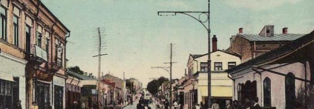
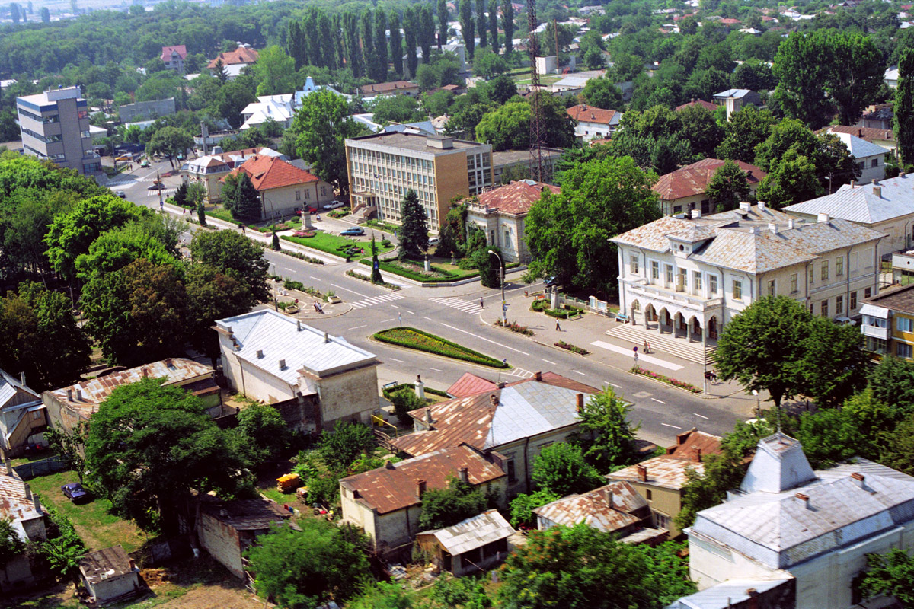
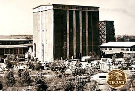
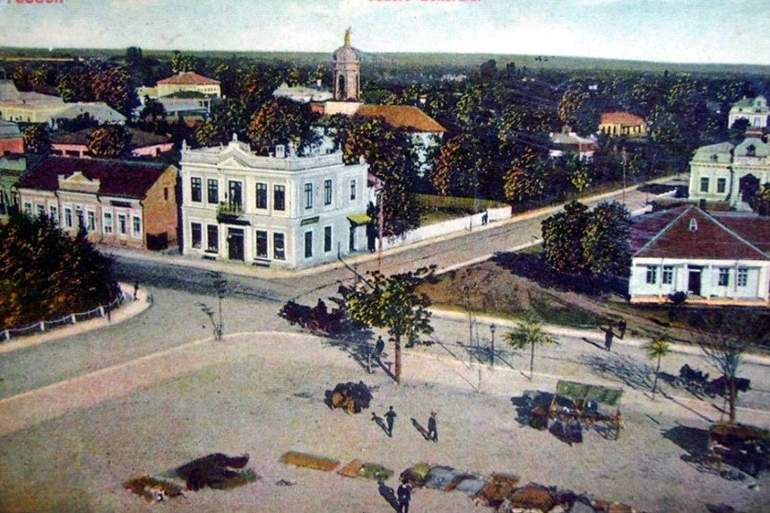
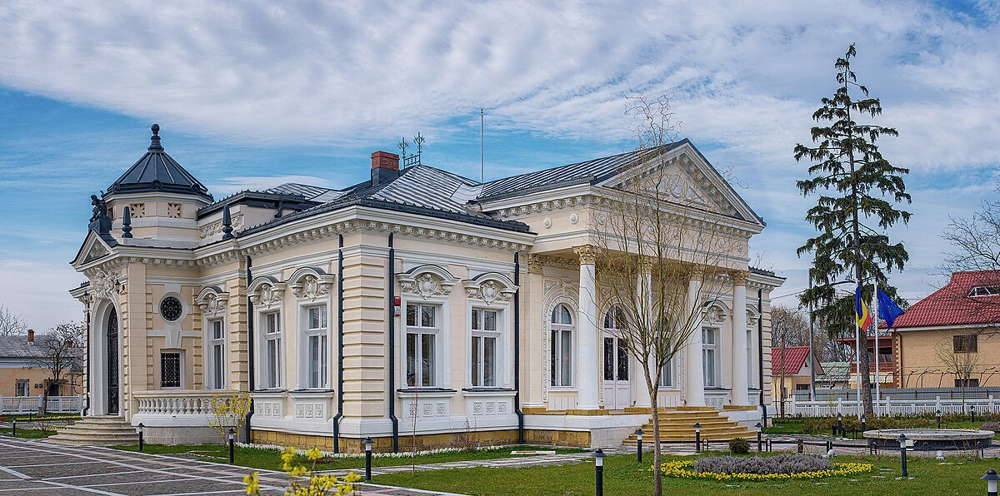

O privire în trecutul
TECUCIULUI
Istoric Tecuci
De la târg medieval la oraș modern


Tecuci, oraș din județul Galați, are o istorie bogată, fiind atestat documentar pentru prima dată în 1435, într-un hrisov emis de Alexandru cel Bun. Poziționat strategic în Moldova, la intersecția unor rute comerciale importante, Tecuciul a fost încă din Evul Mediu un târg activ, cunoscut pentru agricultură și comerț. Numele său, de origine posibil cumană sau pecenegă, sugerează existența unei așezări din vremuri străvechi.
În secolele următoare, orașul a crescut ca centru economic și social, atrăgând meșteșugari și comercianți din diverse zone. Deși a fost afectat de raidurile turco-tătare, Tecuciul și-a revenit datorită poziției sale avantajoase. În secolul al XIX-lea, odată cu reformele lui Alexandru Ioan Cuza, originar din regiune, orașul a beneficiat de modernizare. Conectarea la rețeaua feroviară în 1879 a stimulat comerțul, iar Tecuciul a devenit renumit pentru exporturile agricole și producția locală, inclusiv muștarul, care avea să devină un simbol al orașului.
În perioada interbelică, Tecuciul era un oraș prosper, cu o populație diversă și o economie bazată pe agricultură, industrie ușoară și meșteșuguri. Cele două războaie mondiale au afectat orașul, dar Tecuciul a reușit să-și recapete statutul de centru regional important. În timpul regimului comunist, a fost industrializat, cu fabrici și infrastructură nouă, iar muștarul de Tecuci a continuat să fie un produs emblematic.
După 1989, Tecuciul a intrat într-o perioadă de tranziție, cu provocări economice, dar și oportunități de dezvoltare. Orașul este astăzi cunoscut pentru Muzeul Mixt „Teodor Cincu”, pentru tradițiile locale și pentru celebrul muștar de Tecuci. Moștenirea sa istorică, culturală și economică face din Tecuci un simbol al continuității, care îmbină trecutul cu modernitatea.
Istoric Muștar
Tradiția gustului autentic


Muștarul de Tecuci este unul dintre cele mai renumite produse tradiționale din România, cu o istorie care își are rădăcinile în secolul al XIX-lea. În această perioadă, Tecuciul, un important centru agricol și comercial, a devenit cunoscut pentru producția sa de muștar datorită accesului la ingrediente de calitate și rețetelor locale autentice.
Prima fabrică de muștar din Tecuci a fost înființată la sfârșitul secolului al XIX-lea, folosind semințe de muștar cultivate în zona subcarpatică a Moldovei, renumită pentru solul său bogat. Aceste semințe, combinate cu oțet de calitate și mirodenii naturale, au dat naștere unui produs cu o aromă deosebită, care a câștigat rapid popularitate.
În perioada interbelică, muștarul de Tecuci a devenit un produs emblematic, fiind apreciat atât pe plan local, cât și în alte regiuni ale țării. Calitatea sa a fost recunoscută în mod oficial, iar muștarul produs aici a fost inclus în meniurile festive și comerciale din întreaga țară.
În timpul regimului comunist, producția de muștar a fost integrată în sistemul industrializat, iar fabricile din Tecuci au continuat să producă acest condiment popular, păstrând rețetele tradiționale. Marca „Muștar de Tecuci” a rămas sinonimă cu un produs de calitate, apreciat pentru gustul său unic, fie că era dulce, iute sau cu diverse arome.
După 1989, muștarul de Tecuci a reușit să-și mențină renumele, devenind un simbol al orașului și un brand recunoscut în întreaga țară. Fabricat și astăzi după rețete tradiționale, acesta continuă să fie un produs apreciat, păstrând legătura cu istoria și tradițiile locului.
Astăzi, muștarul de Tecuci este nu doar o delicatesă culinară, ci și o parte importantă a identității culturale și economice a orașului, fiind un simbol al continuității și al mândriei locale.